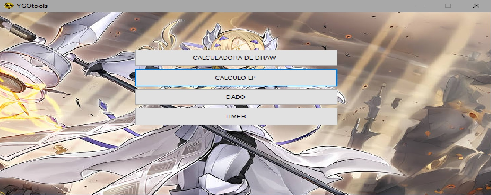
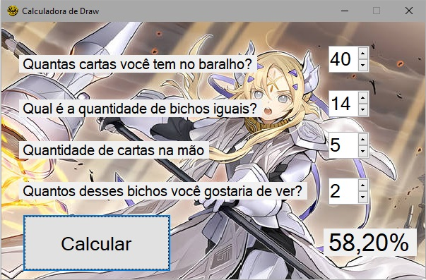
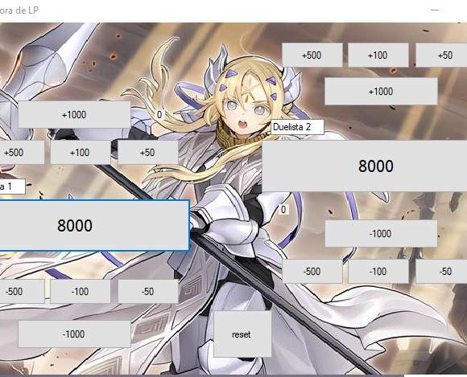
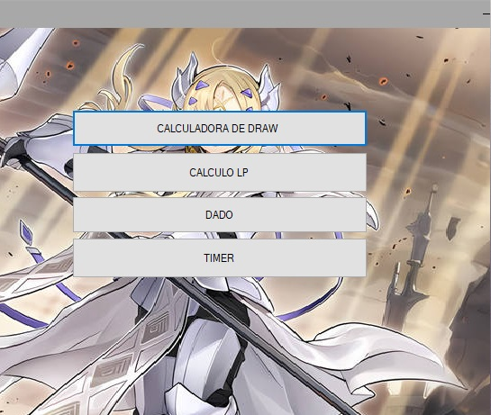

O desafio
Implementar algoritmos matemáticos e distribuições hipergeométricas para prever probabilidades de cartas na mão inicial, mantendo uma interface desktop intuitiva e ágil.
.NET Framework · C# · Windows Forms · Desktop
Aplicação desktop desenvolvida em C# para cálculo probabilístico de abertura de mãos, processamento analítico e gerenciamento de cartas colecionáveis de Yu-Gi-Oh!.
Ver no GitHub
Implementar algoritmos matemáticos e distribuições hipergeométricas para prever probabilidades de cartas na mão inicial, mantendo uma interface desktop intuitiva e ágil.
Aprofundamento em lógica de programação em C#, manipulação de eventos em Windows Forms, estruturas de dados em memória e empacotamento de software desktop.


